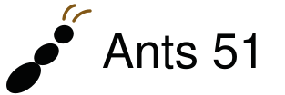
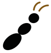
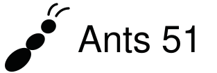

Ants 51 · Three Segments
Production vector redraw of selected concept 01. All text is outlined; no font download required.

on-cream · SVG + PNG

on-black · SVG + PNG

mono-dark · SVG + PNGBack to reference